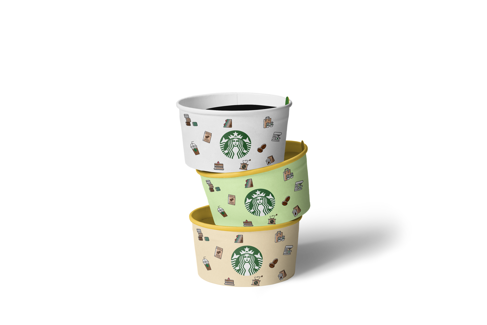
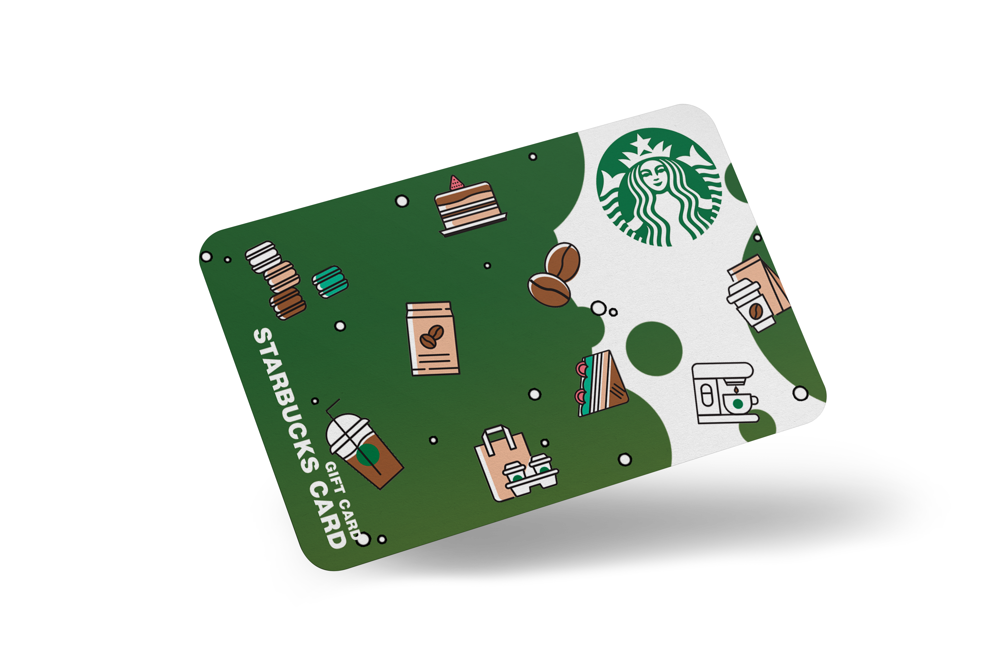
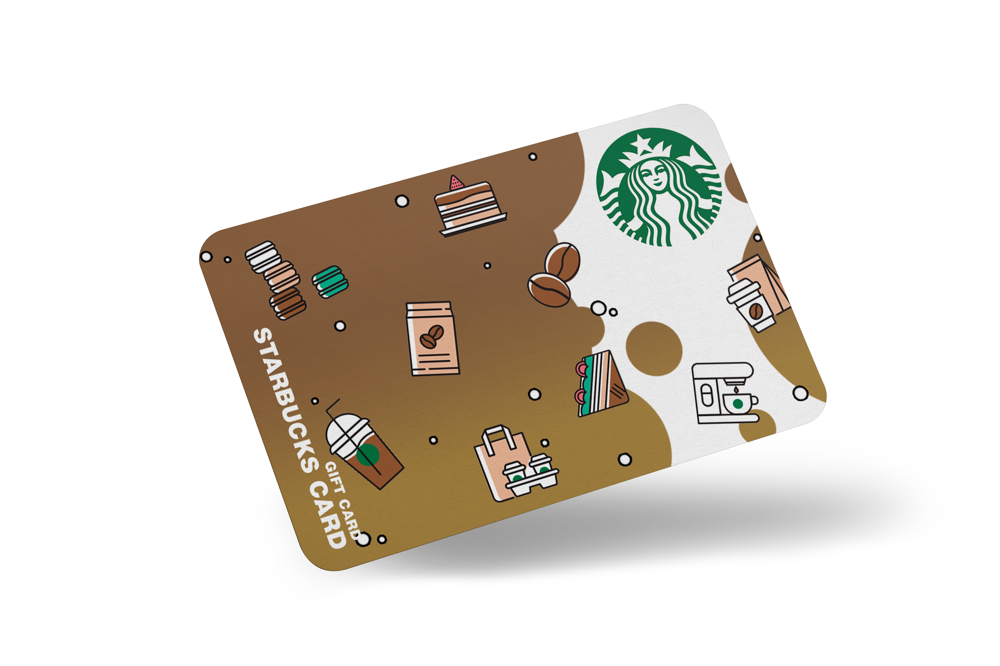
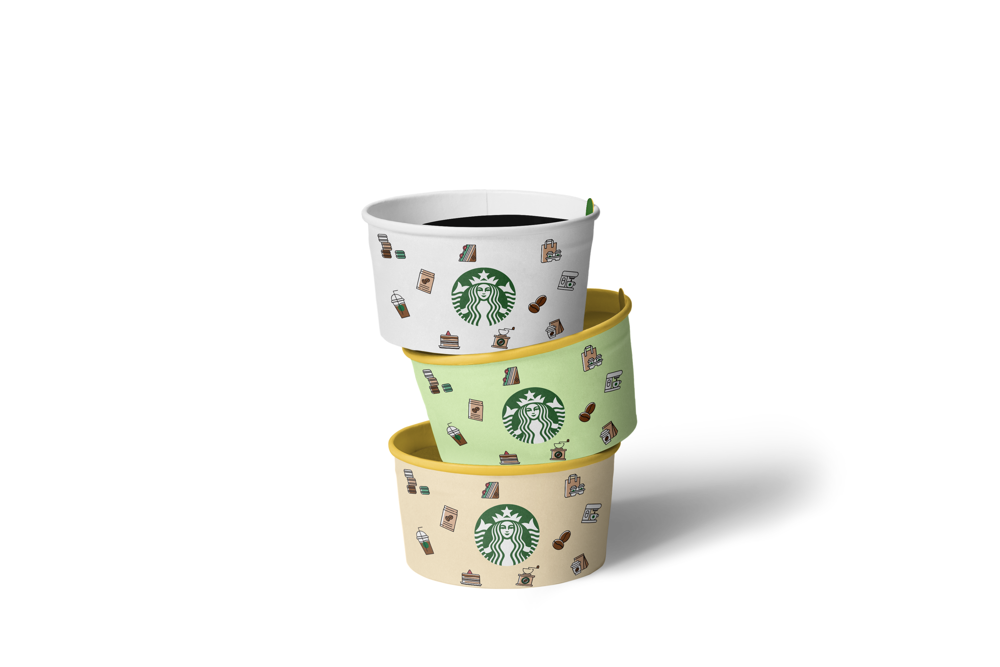
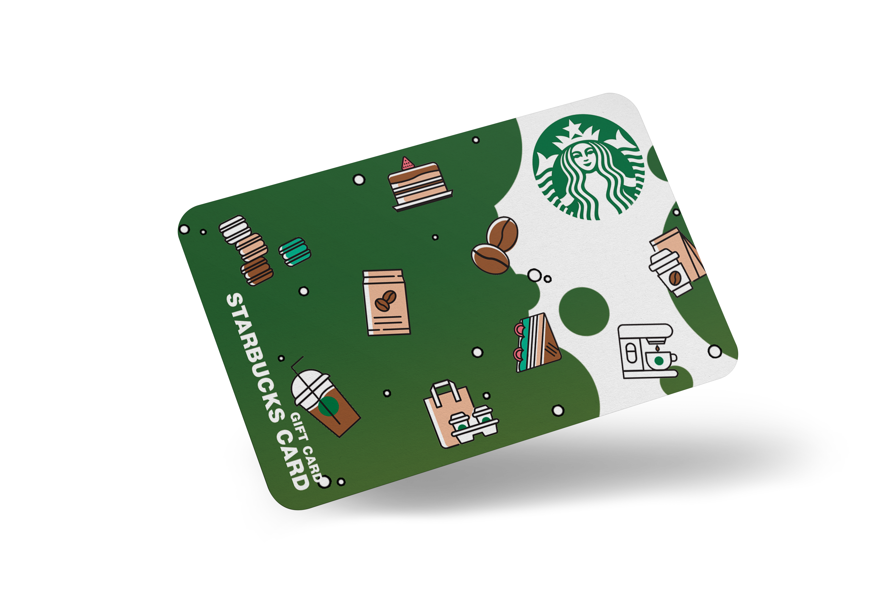
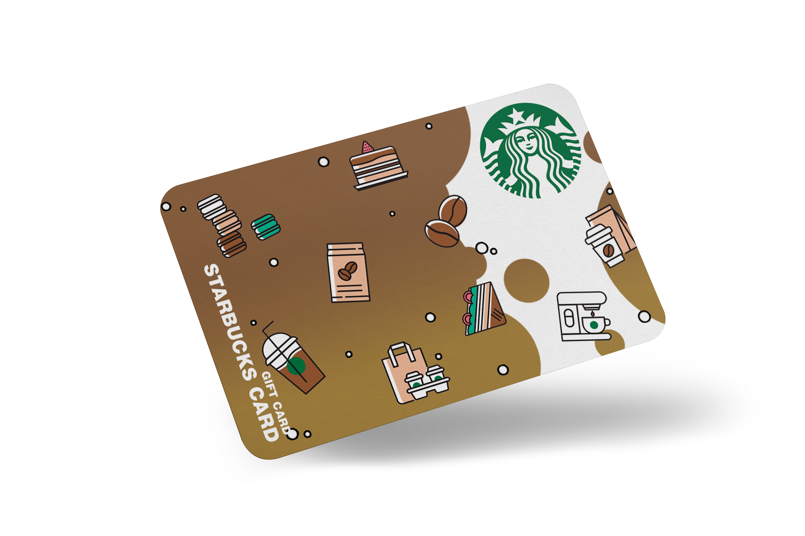

2020-1 ArtWork Portfolio.
Visual Communication
Making Typo Web contents
타이포 웹콘텐츠 제작
: 나눔바른고딕 x Helvetica
- 나눔바른고딕과 헬베티카를 소개하는 웹 콘텐츠를 제작한 2020년 1학기 중간작업물입니다.
글자를 클릭하면 해당 페이지로 이동합니다.
UI&UX Design
Making 20icons





제작한 20 아이콘 및 목업작업
: 스타벅스를 주제로 작업한 아이콘과 목업작업물
- 스타벅스의 아이덴티티를 잘 나타낼 수 있는 픽토그램 아이콘으로, 2020년 1학기 중간작업물 입니다.
글자를 클릭하면 해당 페이지로 이동합니다.
UI&UX Design
Making 20icons


